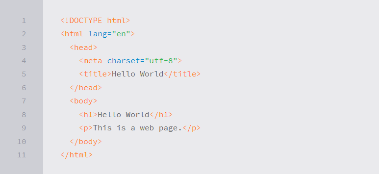
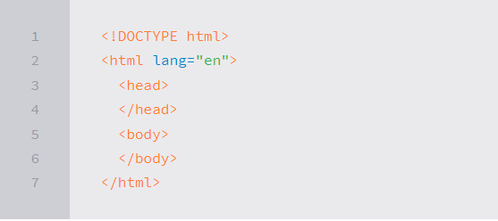

Building Your First Web Page
if you can, imagine a time before the invention of the Internet. Websites didn’t exist, and books, printed on paper and tightly bound, were your primary source of information. It took a considerable amount of effort—and reading—to track down the exact piece of information you were after.Today you can open a web browser, jump over to your search engine of choice, and search away. Any bit of imaginable information rests at your fingertips. And chances are someone somewhere has built a website with your exact search in mind.
Within this book I’m going to show you how to build your own websites using the two most dominant computer languages—HTML and CSS.
Before we begin our journey to learn how to build websites with HTML and CSS, it is important to understand the differences between the two languages, the syntax of each language, and some common terminology.
What Are HTML & CSS?
HTML, HyperText Markup Language, gives content structure and meaning by defining that content as, for example, headings, paragraphs, or images. CSS, or Cascading Style Sheets, is a presentation language created to style the appearance of content—using, for example, fonts or colors.
The two languages—HTML and CSS—are independent of one another and should remain that way. CSS should not be written inside of an HTML document and vice versa. As a rule, HTML will always represent content, and CSS will always represent the appearance of that content.
With this understanding of the difference between HTML and CSS, let’s dive into HTML in more detail.
Understanding Common HTML Terms
While getting started with HTML, you will likely encounter new—and often strange—terms. Over time you will become more and more familiar with all of them, but the three common HTML terms you should begin with are elements, tags, and attributes.
1.Elements
Elements are designators that define the structure and content of objects within a page. Some of the more frequently used elements include multiple levels of headings (identified as through elements) and paragraphs (identified as the
element);
elements are identified by the use of less-than and greater-than angle brackets, , surrounding the element name. Thus, an element will look like the following:
2.Tag
The use of less-than and greater-than angle brackets surrounding an element creates what is known as a tag. Tags most commonly occur in pairs of opening and closing tags.
An opening tag marks the beginning of an element. It consists of a less-than sign followed by an element’s name, and then ends with a greater-than sign; for example,
A Closing tag marks the end of an element. It consists of a less-than sign followed by a forward slash and the element’s name, and then ends with a greater-than sign;
The content that falls between the opening and closing tags is the content of that element. An anchor link, for example, will have an opening tag of and a closing tag of . What falls between these two tags will be the content of the anchor
Attributes
Attributes are properties used to provide additional information about an element. The most common attributes include the id attribute, which identifies an element; the class attribute, which classifies an element; the src attribute, which specifies a source for embeddable content; and the href attribute, which provides a hyperlink reference to a linked resource.
Attributes are defined within the opening tag, after an element’s name. Generally attributes include a name and a value. The format for these attributes consists of the attribute name followed by an equals sign and then a quoted attribute value. For example, an element including an href attribute would look like the following:

Setting Up the HTML Document Structure
HTML documents are plain text documents saved with an .html file extension rather than a .txt file extension. To begin writing HTML, you first need a plain text editor that you are comfortable using. Sadly this does not include Microsoft Word or Pages, as those are rich text editors. Two of the more popular plain text editors for writing HTML and CSS are Dreamweaver and Sublime Text. Free alternatives also include Notepad++ for Windows and TextWrangler for Mac.
The document type declaration, or , informs web browsers which version of HTML is being used and is placed at the very beginning of the HTML document. Because we’ll be using the latest version of HTML, our document type declaration is simply . Following the document type declaration, the element signifies the beginning of the document.
In Practice
As web designers and front-end developers, we have the luxury of attending a number of great conferences dedicated to our craft. We’re going to make up our own conference, Styles Conference, and build a website for it throughout the following lessons. Here we go!
1.Let’s open our text editor, create a new file named index.html, and save it to a location we won’t forget. I’m going to create a folder on my Desktop named “styles- conference” and save this file there; feel free to do the same.
2.Within the index.html file, let’s add the document structure, including the () document type and the , , and elements.

Understanding Common CSS Terms
In addition to HTML terms, there are a few common CSS terms you will want to familiarize yourself with. These terms include selectors, properties, and values. As with the HTML terminology, the more you work with CSS, the more these terms will become second nature.
Selectors
As elements are added to a web page, they may be styled using CSS. A selector designates exactly which element or elements within our HTML to target and apply styles (such as color, size, and position) to. Selectors may include a combination of different qualifiers to select unique elements, all depending on how specific we wish to be. For example, we may want to select every paragraph on a page, or we may want to select only one specific paragraph on a page.